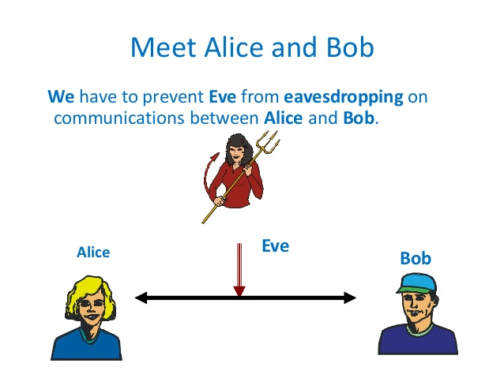

<!doctype html>
<html lang="en">
    <head>
        <meta charset="utf-8">
        <meta name="viewport" content="width=device-width, initial-scale=1.0, maximum-scale=1.0, user-scalable=no">

        <title>What is Facebook?</title>
        <link rel="stylesheet" href="./css/reveal.css">
        <link rel="stylesheet" href="./css/theme/black.css" id="theme">
        <link rel="stylesheet" href="./css/highlight/zenburn.css">
        <link rel="stylesheet" href="./css/print/paper.css" type="text/css" media="print">
          <link rel="stylesheet" href="./_assets/../css/theme/league.css">


    </head>
    <body>

        <div class="reveal">
            <div class="slides"><section  data-markdown><script type="text/template">
# Wiring the Spark

### Dmytri Kleiner
dk@trick.ca<br>
@dmytri<br>
</script></section><section  data-markdown><script type="text/template">
# What is Facebook?
### Capitalism is in there somewhere. But where?
</script></section><section  data-markdown><script type="text/template">
### Capitalism is normally understood as putting machinery in the hands of labour and appropriating the product for sale on the market.

## Labour, Machinery, Product, Sale
</script></section><section  data-markdown><script type="text/template">
### Machinery is a means for producing
# surplus-value

#### Machinery is intended to cheapen commodities, and, by shortening that portion of the working-day, in which the labourer works for himself, to lengthen the other portion that he gives, without an equivalent, to the capitalist
- Capital, Chapter 15

<br>
##### Labour Saving
</script></section><section  data-markdown><script type="text/template">
# Facebook
### is not Machinery
#### It doesn't produce surplus-value, It is not Labour Saving
## So Where is the Machinery?
</script></section><section  data-markdown><script type="text/template">
# Facebook 
### is a not a commodity

#### The platform is not a commodity, it's provided for free
### The content is not a commodity, it's provided for free, often by the users themselves

## So where is the product being sold?
</script></section><section  data-markdown><script type="text/template">
# Facebook
### Does not exploit its workers

### No workers, no machinery, no commodity
#### (We all know that dotcom devs are petty bourgeois assholes)
## So Where is the labour?
</script></section><section  data-markdown><script type="text/template">
# Invisible Labour
</script></section><section  data-markdown><script type="text/template">
#### An Example of Invisible Labour
### Domestic Labour under Patriarchy
- Home makers do not sell their labour power
- They get a free platform: house and kitchen
- They work for free
- They perform reproductive and  affective labour, take care of their family
- The result is the labour power of their husband and the future labour power of their children
- The husband sells "his" labour power as a commodity, and pays for the house and kitchen
</script></section><section  data-markdown><script type="text/template">
### Invisible Labour under Facebook
- You do not sell your labour power to Facebook
- You get a free platform: Facebook
- You work for free
- You share with and care for your friends
- The result is an audience on Facebook
- Facebook sells "their" audience as a commodity, and pays for the platform
</script></section><section  data-markdown><script type="text/template">
## Facebook is not your boss
## Facebook is not your landlord
## Facebook is not your grocer
</script></section><section  data-markdown><script type="text/template">
# Facebook
# is your husband
</script></section><section  data-markdown><script type="text/template">
#### Your abusive, invasive, controlling, psychopathic, husband


(actual profile pic)
</script></section><section  data-markdown><script type="text/template">
# Audience Commodity
- Commodities are sold by grade and measure
- Eggs, for instance can be sold as one dozen, grade A
- Network Cable can be sold as 10 meters, cat 5

<br>
### Audience can be sold as 1000 impressions or clicks from middle age white men with a credit card who have recently googled weight loss
</script></section><section  data-markdown><script type="text/template">
#### Audience Commodity requires surveillance
### In order to grade audience commodity, Facebook needs to gather as much information about you as possible, and exchange information with its advertisers and partners
</script></section><section  data-markdown><script type="text/template">
### All profit is stolen from global workers
#### Ultimately the profits of the companies that pay Facebook for the advertising come from the labour of the workers in the global fields and factories

#### Thus, Facebook depends on the exploitation of these workers.
</script></section><section  data-markdown><script type="text/template">
### Facebook doesn't show you what you want to see, but what its advertisers want you to see
#### Revolutionary communications are suppressed
#### Facebook cannot work without the exploitation of global workers, surveillance and instrumentalization.
</script></section><section  data-markdown><script type="text/template">
“For the master’s tools will never dismantle the master’s house. They may allow us to temporarily beat him at his own game, but they will never enable us to bring about genuine change." -- Audre Lourde
</script></section><section  data-markdown><script type="text/template">
## So how do we Wire the Spark?
### How do we build resources for popular communications?
</script></section><section  data-markdown><script type="text/template">
## We need a room of our own

"But, you may say, we asked you to speak about women and fiction—what, has that got to do with a room of one’s own? [...] a woman must have money and a room of her own if she is to write fiction" -- Virginia Woolf
</script></section><section  data-markdown><script type="text/template">
### Why do we always fail to build our own room?
#### UseNet, Diaspora, StatusNet, Mastadon, etc.
### No lack of attempts
</script></section><section  data-markdown><script type="text/template">
# Threat Model



#### Alternatives tend to focus on malicious attacks, But who is Eve working for?
</script></section><section  data-markdown><script type="text/template">
### There is another threat out there, besides eve, mallory, sybil and the others, that is often ignored
</script></section><section  data-markdown><script type="text/template">
#### Rich Uncle Pennybags


</script></section><section  data-markdown><script type="text/template">
## The Pennybags Attack

- A platform is vulnerable to the pennybags attack when its architecture becomes more expensive with each new user

- Material upkeep of server and admins becomes too large for voluntary operation
</script></section><section  data-markdown><script type="text/template">
### Rich Uncle Pennybags shows up with money

### and a glint in his eye
</script></section><section  data-markdown><script type="text/template">
#### Any platform based on a client-server architecture is vulnerable

## To resist this attack, we need software that does not require a server, but runs on the computers of its users, each of which provide their own resources

#### bitTorrent is an example of this
</script></section><section  data-markdown><script type="text/template">
### Building an End to End platform is hard
- Capital wont pay for it
- Neoliberal states wont pay for it
- The media will demonize it
- Requires a dedicated community
</script></section><section  data-markdown><script type="text/template">
# To wire the spark we need a divorce

### We need to end our abusive relationship with Facebook and build a revolutionary open platform that has consent, privacy and freedom wired into its architecture
</script></section><section  data-markdown><script type="text/template">
fin.

</script></section></div>
        </div>

        <script src="./lib/js/head.min.js"></script>
        <script src="./js/reveal.js"></script>

        <script>
            function extend() {
              var target = {};
              for (var i = 0; i < arguments.length; i++) {
                var source = arguments[i];
                for (var key in source) {
                  if (source.hasOwnProperty(key)) {
                    target[key] = source[key];
                  }
                }
              }
              return target;
            }

            // Optional libraries used to extend on reveal.js
            var deps = [
              { src: './lib/js/classList.js', condition: function() { return !document.body.classList; } },
              { src: './plugin/markdown/marked.js', condition: function() { return !!document.querySelector('[data-markdown]'); } },
              { src: './plugin/markdown/markdown.js', condition: function() { return !!document.querySelector('[data-markdown]'); } },
              { src: './plugin/highlight/highlight.js', async: true, callback: function() { hljs.initHighlightingOnLoad(); } },
              { src: './plugin/zoom-js/zoom.js', async: true },
              { src: './plugin/notes/notes.js', async: true },
              { src: './plugin/math/math.js', async: true }
            ];

            // default options to init reveal.js
            var defaultOptions = {
              controls: true,
              progress: true,
              history: true,
              center: true,
              transition: 'default', // none/fade/slide/convex/concave/zoom
              dependencies: deps
            };

            // options from URL query string
            var queryOptions = Reveal.getQueryHash() || {};

            var options = {};
            options = extend(defaultOptions, options, queryOptions);
        </script>


        <script>
          Reveal.initialize(options);
        </script>
    </body>
</html>
